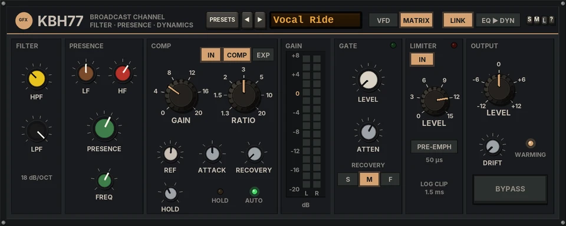
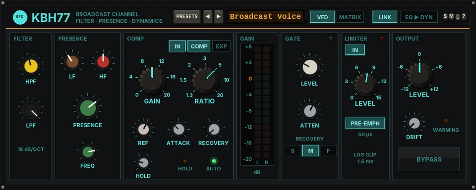

KBH77
A 1970s Danish broadcast channel: an 18 dB/oct filter, a presence equaliser, a compressor / expander with hold and gate, and a safety limiter with a logarithmic clipping circuit.


Overview
KBH77 is built like the slim 40 mm cassettes of a 70s broadcast frame, side by side: FILTER, PRESENCE, COMP, a GAIN meter, GATE, LIMITER and OUTPUT. The sound is designed from scratch.
The compressor follows the cassette's own law: constant output at the reference level. A signal at REF always comes out at REF, whatever GAIN and RATIO are set to. Above REF it is compressed at RATIO; below REF it is lifted on the same slope, up to GAIN. So GAIN brings quiet material up and RATIO decides how firmly everything is pulled towards REF, without the output level moving as you change them. With GAIN at 0 it is simply a compressor with its threshold at REF.
Recovery runs in a straight line in dB, as on the original's curves, and the AUTO position uses dual time constants: a short peak recovers in 200 ms, a long loud passage brings in a slow 15-second part. HOLD stops the gain from rising in pauses, so GAIN never pumps the noise floor up.
The limiter sits after the OUTPUT level, so its threshold is a true ceiling. It holds the steady level at the threshold and catches the fastest peaks with an anti-aliased logarithmic clipping circuit, never more than 3 dB over it.
Linked stereo by default, no latency. Levels: 0 dBu = -18 dBFS. As a dynamics tool its output passes straight through (no clip).
Reach for it for
- Voice-over, dialogue and radio-style vocals
- Bringing quiet detail up without squashing the loud parts (GAIN)
- Evening out bass and acoustic instruments
- A gentle glue and safety ceiling on a bus
- Cleaning up noisy tracks with the expander or gate
Controls
The header
- PRESETS
- Opens the full preset list.
- ◄ / ►
- Step to the previous or next preset (wrapping round).
- Preset display
- Shows the preset name. Click it for the preset list too.
- VFD / MATRIX
- The look and a touch of the sound. VFD is the later transformerless cassette: clean. MATRIX is the earlier transformer-coupled cassette: a little iron on the low end, nothing audible below about -24 dBFS of bass. Switching glides the iron in or out.
- LINK
- Lit: one detector on the louder channel drives both sides of the compressor and gate (the stereo image holds). Unlit: each side on its own. The limiter is always linked.
- EQ ► DYN / DYN ► EQ
- The order of the PRESENCE and COMP cassettes. The two cassettes swap places on the panel. The filter is always first and the limiter always last.
- S / M / L
- Panel size: small, medium or large.
- ?
- The design credit, the GFX website and the address of this manual.
FILTER
- HPF
- High-pass, 18 dB/oct: OFF, 40, 60, 80, 113, 160, 226, 320, 452 or 640 Hz (OFF by default).
- LPF
- Low-pass, 18 dB/oct: 1, 1.4, 2, 2.8, 4, 5.6, 8, 11.2 or 16 kHz, or OFF (OFF by default).
Both are stepped. A step glides, and OFF slides the corner out of the band before the filter switches out, so changes never click.
PRESENCE
- LF
- Low shelf round 60 Hz, ±12 dB in 3 dB steps.
- HF
- High shelf round 10 kHz, ±12 dB in 3 dB steps.
- PRESENCE
- A broad bell, ±10 dB in 2 dB steps, at the FREQ below.
- FREQ
- The presence frequency: 0.7, 1, 1.4, 2.8, 4 or 5.6 kHz (2.8 kHz by default). It has no effect while PRESENCE is at 0.
COMP
- IN
- The dynamics section in or out (a 20 ms glide). Out on Init.
- COMP / EXP
- Compressor or expander. The cassette's title follows.
- GAIN (ATT in EXP)
- COMP: how much quiet material is lifted, 0 to +20 dB. EXP: the most it will turn quiet material down, 0 to 20 dB.
- RATIO
- COMP: 1.3, 1.5, 2, 3, 5, 10 or 20:1. EXP: 1:1.25 to 1:1.9 on the same positions.
- REF
- The reference level, -8 to +15 dBu (+6 dBu = a -12 dBFS peak by default). COMP: the pivot - signals at REF are unchanged, above it they are compressed, below it lifted up to GAIN. EXP: where expansion starts; above it the signal passes at unity.
- ATTACK
- 0.1, 0.3, 1, 3, 10, 30 or 100 ms (per 20 dB of gain change; 3 ms by default).
- RECOVERY
- AUTO, 0.1, 0.3, 1, 3 or 6 s per 20 dB, after a 20 ms recovery delay (no ripple on low notes). AUTO: the dual time constants, 200 ms upon 15 s, with a 50 ms delay. The AUTO lamp lights while AUTO is chosen.
- HOLD
- -10 to -50 dB, OFF fully clockwise (by default). When the programme drops further than this below the level the detector is holding, recovery stops: in a pause, the gain stays where it was. The HOLD lamp lights while it holds.
GAIN meter
Sixteen steps from +8 to -20 dB for each side: how much the compressor, expander and gate are changing the level. It shows gain change, not signal level, so it sits at 0 whenever nothing is acting. Lift above 0 lights in amber, reduction below 0.
GATE
- LEVEL
- The gate threshold, 0 to -50 dBu at the input of the dynamics section; OFF fully anticlockwise (by default). Below it the signal is expanded 1:2.
- ATTEN
- The most the gate will turn down, 0 to 20 dB (12 dB by default).
- RECOVERY S / M / F
- How fast it closes: 500, 100 or 20 ms per 20 dB. It opens in about 1 ms. The lamp lights while the gate is turning the signal down.
LIMITER
- IN
- The limiter in or out (a 20 ms crossfade). Out on Init.
- LEVEL
- The threshold, 0 to +15 dBu at the output (+10 dBu = -8 dBFS by default). The steady level is held here with a 1.5 ms attack and dual recovery (200 ms upon 15 s); peaks shorter than 1.5 ms go to the clipping circuit, clean up to about 1 dB over the threshold and never more than 3 dB over it. The lamp lights while it limits.
- PRE-EMPH
- The detector hears a 50 µs pre-emphasised signal, as for broadcast: bright material is limited harder.
OUTPUT
- LEVEL
- The output level, -12 to +12 dB, before the limiter.
- DRIFT
- See DRIFT below (50% by default).
- OVEN lamp
- Blinks (WARMING) while the oven warms, then shows the heater cycling.
- BYPASS
- Lit = bypassed. A click-free 20 ms crossfade to the untouched input.
Knobs: drag up or down (Shift for fine moves) or use the mouse wheel; double-click to reset a knob to its default. A knob's value replaces its name while you touch it.
DRIFT
DRIFT is the limiter's heated oven. Each instance starts cold and warms over about 45 seconds of running audio. While it is cold the logarithmic converters read high: REF sits about 1.5 dB lower, the limiter about 1 dB lower, with a little difference between left and right, and recovery is up to 20% slower. Once warm, the thermostat cycles the oven every 20 to 40 seconds (±0.15 dB) with a slow wander on each side (±0.2 dB). 50% is the standard amount, 100% twice that, 0% steady and exact (the lamp still warms; the sound does not move).
The warm-up counts processed audio from the moment the plug-in loads. For a render whose first bars match the rest, let the lamp settle first, or set DRIFT to 0%.
Presets
Presets set every cassette (filter, presence, compressor, gate, limiter, output level and the order). The look, LINK, DRIFT and BYPASS are left as they are. The list also has Reset all to defaults.
- Init
- Everything flat and out: the signal passes clean.
- Vocal Ride
- HPF 80 Hz, presence +2 dB at 2.8 kHz, HF +3; GAIN 6, 3:1 at +4 dBu, 3 ms, AUTO, HOLD -30; limiter at +12 dBu.
- Broadcast Voice
- HPF 113 Hz, LF -3, presence +4 dB at 4 kHz; GAIN 10, 5:1, 1 ms, AUTO; gate at -40 dBu; limiter at +8 dBu with pre-emphasis.
- Dialogue Clean
- HPF 113 Hz, LPF 11.2 kHz, presence +2 dB; GAIN 4, 2:1, 10 ms, 1 s; gate at -35 dBu, 15 dB down; limiter at +10 dBu.
- Drum Bus
- HPF 40 Hz, LF and HF +3; GAIN 4, 3:1 at +2 dBu, 30 ms, 0.3 s; DYN before EQ; limiter at +12 dBu.
- Bass Even
- HPF 40 Hz, LF +3, presence -2 dB at 1 kHz; GAIN 8, 5:1, 10 ms, AUTO, HOLD -20; limiter at +10 dBu.
- Acoustic Guitar
- HPF 80 Hz, LF -3, presence +2 dB at 5.6 kHz, HF +3; GAIN 4, 2:1, 10 ms, 0.3 s.
- Mix Bus Glue
- GAIN 2, 1.5:1 at +8 dBu, 30 ms, AUTO; DYN before EQ; limiter at +14 dBu.
- Upward Lift
- GAIN 12, 2:1, 3 ms, AUTO, HOLD -20: quiet detail comes up, the loud parts barely move; limiter at +12 dBu.
- Radio Limiter
- HPF 60 Hz, presence +2 dB; GAIN 8, 10:1, 1 ms, AUTO; limiter at +6 dBu with pre-emphasis.
- Expander Clean-up
- EXP at -2 dBu, 1:1.55, up to 12 dB down, 1 ms, 0.3 s.
- Noisy Track Gate
- HPF 60 Hz; the gate at -30 dBu, 20 dB down, FAST; the compressor out.
- Tape Transfer
- LPF 11.2 kHz, LF +3, HF -3; GAIN 2, 2:1 at +8 dBu, AUTO; limiter at +14 dBu.
- Reset all to defaults
- (Last in the list.) Init, with MATRIX, LINK on, DRIFT 50% and BYPASS off.
Tips
- Set REF where the loud parts of the performance sit, then raise GAIN until the quiet parts come up as far as you like: the loud parts stay put.
- With a lot of GAIN, set HOLD to about -20 dB so breaths and room noise do not swell in the pauses.
- Leave the limiter IN on anything going to air or to a client: it is a ceiling, and it stays out of the way below its threshold.
- Try DYN ► EQ when you want the presence lift to stay bright after the compressor has done its work.
File: gfx-kbh77.jsfx